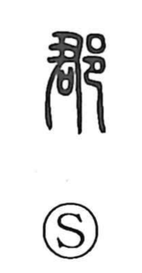

郡

Uncategorized
Kun: kori | On: gun
district ・ county
Explanation
郡 is a phono-semantic character with 君 as its phonetic. In antiquity, 君 referred to the village lord, the 里君, and 郡 named the domain over which he held sway. The graph later became the designation for a formal administrative unit: after Qin unified China in 221 BCE, the realm was divided into thirty-six 郡, with 県 placed beneath them. Japan subsequently adopted this tiered structure in the Meiji era, positioning 郡 below 県.